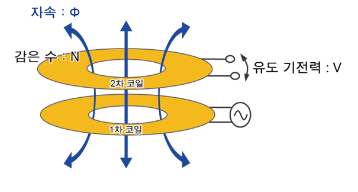

THE CLUB
우리는 수원시 수성고등학교 2학년 공학 탐구 동아리다. 구성 멤버는 이희성, 임형우, 엄도윤, 장민, 장준영이다. 우리는 평소 공학이나 과학의 개념적인 것은 많이 배우지만 그에 비해 실험이나 실습을 진행할 수 있는 기회가 적다고 생각하여, 이러한 고민을 해결하고자 이 동아리를 결성하였다.
동아리는 한 사람이 주제를 선정하고, 다른 한 명은 자원하여 두 사람이 활동 진행자가 되어 실습 계획과 방법을 설계한다. 한 주제에 대하여 총 두 차시에 걸쳐서 활동을 하는데, 첫 차시에는 주로 실습활동과 관련된 이론적 지식을 소개하는 ppt 수업이 진행하고 다음 차시에 진행될 활동들에 필요한 준비물들을 공지하여 각자 구하게 하거나 전달해준다. 다음 차시에는 본격적으로 실습활동을 진행했다..
이 웹사이트는 마지막 주제인 '웹/인터넷'의 실습활동인 웹 프로그래밍의 최종 결과물이다. 조금 더 구체적인 제작 과정은 위 메뉴바의 Journal(일지)에서 Day7, 8을 통해 볼 수 있다.
DAY 1
무선 전력 송수신 기술의 원리 학습, Jun 21, 2020
이희성 학생이 준비한 ppt를 이용하여 전자기 유도의 개념과 무선 전력 송수신의 원리에 대하여 알아보고, 다음 실습에 필요한 재료를 각자 준비하였다.
전자기 유도는 코일 주위에서 코일과 자석의 상대적인 운동으로 코일 내부를 지나는 자기선속이 변할 때 코일에 전류가 흐르는 현상이다.
DAY 2
무선 전력 송수신기 만들기, Jul 12, 2020

코로나로 인해 동아리활동도 비대면으로 실시해야 했기 때문에 이희성 학생이 무선 전력 송수신기를 만드는 영상(바로 위의 유튜브 영상)을 직접 촬영하여 부원들을 보고 따라할 수 있도록 했다.
준비물은 구리선, 건전지, 전선, 저항, led, 트랜지스터, 커넥터, 사포, 고무캡이다.
트렌지스터가 주기적으로 전류의 방향을 바꿔서 1차 코일에 흐르는 전류의 방향이 바뀌고, 그에 따라 1차 코일에 생기는 자기장도 변하게 된다. 1차 코일의 자기장이 변함에 따라 2차 코일을 통과하는 자기선속의 수가 바뀌고, 2차 코일에 전류가 유도된다.
DAY 3
축전기의 원리 학습, Aug 30, 2020
역시 비대면으로 발표를 진행해야 했기 때문에 화상회이 프로그램 zoom을 이용하여 임형우 학생이 축전기의 원리에 대한 ppt발표를 진행하였다.
축전기의 원리는 현재 우리가 받는 고교 교육 과정에서 배우지는 않지만 비교적 원리는 간단하다. 축전기는 전기에너지를 저장하는 장치이다. 위 회로도에서 볼 수 있듯이 축전기는 보통 동일한 금속판 두 장을 마주보게 좋은 평행판 구조이다. 두 금속판을 전지에 연결하면 정전기 유도에 의해 한 금속판에 +Q의 전하가 모이고 다른 금속판은 같은 양의 전하를 잃게 되어 -Q의 전하가 모이게 된다. 이때 이들 전하 사이에는 인력이 작용하므로 전지와의 연결을 끊어도 금속판의 전하들은 이동하지 못하고 전기에너지가 저장되는 것이다.
DAY 4
간이 축전기 제작 & 실험하기, Sep 6, 2020
제작한 축전기의 알루미늄 호일은 두 개의 금속판 역할을, 호일 사이에 낀 플라스틱 컵은 금속판 사이의 절연체 역할을 한다. 컵의 양 바깥쪽으로 빠져있는 호일은 각각 위 회로에 의하면 전지의 (+)극과 (-)극이 연결되는 것이지만 우리는 전지를 사용하는 대신에 정전기 유도를 사용하여 두 알루미늄 호일 사이에 전위차를 발생시켰다. 한쪽 호일을 (-)로 대전시키면 다른쪽 호일은 상대적으로 (+)전하를 띄게된다. 이렇게 생겨난 전위차의 의해 두 호일사이에 인력이 작용하여 위에서 설명한 것과 같이 전기에너지를 저장할 수 있게 된다. 이 상태에서 양쪽 호일을 손으로 잡으면 (+)에서 (-)로 전류가 몸을 타고 흐르게 되어 작은 지직소리가 남과 동시에 손으로 정전기가 느껴진다.
DAY 5
파동의 특징과 마이크로파의 생성 원리 학습, Oct 31, 2020
00학생이 준비한 ppt로 파동의 특징과 전자레인지가 마이크로파를 생성하는 원리에 대하여 알아보는 시간을 가졌다. 학습한 모든 내용은 다음 시간에 이어질 실험결과를 해석하는데 중요한 역할을 할 것이다.
전자기파는 전기장과 자기장의 주기적 변화가 서로에게 영향을 미쳐 공간안에서 전파해 가는 파동이다. 마이크로파, 전파, 자외선, 적외선, x선, 감마선 그리고 사람의 눈으로 보이는 가시광선까지 모두 진동수 또는 파장에 따라 분류된 전자기파이다.
전자레인지는 음식에 마이크로파를 쬐여서 음식을 데우는데, 이것은 바로 마이크로파의 전기장이 변하면서 극성을 띄는 물분자들이 진동하게 되어 열 에너지를 발생시키는 것이다. 전자레인지의 마이크로파를 생성시키는 것은 바로 마그네트론이라는 장치의 역할이다. 마그네트론은 크게 두 종류의 부품(진공관 & 자석)으로 구성된다. 진공관은 다시 구리 고리와 중심에 위치한 필라멘트로 나누어지고 필라멘트는 내부 필라멘트와 그 필라멘트를 코일처럼 감싸는 외부 코일로 나누어진다. 구리 고리는 바로 Anode의 역할을 하고, 내부 필라멘트는 Cathode의 역할을 한다. 필라멘트에 고전압을 걸어주게 되면 가열된 내부 필라멘트(Cathode)에서 전자들이 방출되어 마그네트론의 가장자리 부분으로 이동한다. 이때 바깥에 있는 자석들이 전자를 휘게 함으로써 전기장의 변화가 생긴다. 이 변화가 바로 마이크로파를 발생시키는 원인이 된다.
파동의 속력은 진동수와 파장의 길이를 곱해서 구할 수 있다. 빛이나 전자기파의 경우 그 속력은 c이고 그 식은 c=fλ이다.
DAY 6
전자레인지로 빛의 속력 구하기, Nov 7, 2020
빛의 속력을 구하는 방법은 여러 가지지만 이 방법은 전자레인지만 있다면 누구든지 직접 집에서 시도해볼 수 있는 방법이다. 빛과 모든 전자기파의 속력은 진공에서 c의 속력으로 직진하며 그 c를 구하려면 빛의 파장과 진동수가 필요하다. 전자레인지의 옆면을 보면 전자레인지에서 생성하는 마이크로파의 진동수가 2.45GHz라고 나와있다. 이제 파동만 알면 된다.
전자레인지 내부의 회전판을 빼고 넓적한 초콜릿을 넣어서 잠깐동안 작동시키면 몇 개의 지점에서만 초콜릿이 녹은 것을 발견하게 된다. 이 녹은 점들은 열점이라고 부르는데, 이렇게 초콜릿의 특정 지점만 녹은 이유는 위 사진과 같이 파동이 전파될 때 변위의 변화폭이 큰 지점(골 또는 마루)이 있고 그렇지 않은 지점이 있기 때문이다. 움직임이 활발한 곳은 물분자의 진동도 활발하기 때문에 먼저 온도가 높아진다. 그래서 전자레인지는 이 열점들만 데워지는 것을 막기위해 회전판으로 음식을 골고루 데우는 것이다.
열점과 파장의 관계는 다음과 같다. 전파되는 마이크로파의 마루와 골을 반복하여 변위가 변하는 위치가 바로 열점이고 열점과 열점 사이의 거리를 구하면 그것이 곹 마루와 마루 혹은 골과 골 사이의 거리가 된다. 즉 파장의 길이가 구해진다. 여러 번 실험들 진행해본 결과 평균적으로 열점과 열점 사이 거리는 평균 6cm 정도임을 알게 되었다. 계산해 본 빛의 속력은 실제 c와의 오차율이 2%로 나타났다.
DAY 7
인터넷과 웹의 작동원리, Nov 21, 2020
인터넷과 웹에 관한 ppt자료로 장준영 학생이 웹페이지의 구성과 브라우저에 웹페이지가 열리게 되는 과정을 발표하였다.
웹페이지에 접근하려는 쪽의 다른 말인 client는 특정 웹페이지를 보기 위해서는 웹페이지와 관련된 파일들을 서버에게 요청하여 서버로 부터 파일을 다운받는 과정을 거치게 된다. HTML과 CCS 그리고 Javascript는 웹페이지를 구성하는 3대 컴퓨터 언어이다. 다음 차시에 웹페이지를 만들 때는 HTML을 중심으로 활동할 것을 계획했다.
DAY 8
HTML로 동아리 웹페이지 만들기, Nov 22, 2020
visual studio code로 html을 작성하는 캡쳐 사진이다.
배경 색, 헤딩, 메뉴바, 글자 폰트 등을 조정하기 위해서 약간의 CSS도 사용되었다. 디자인과 내용작성 및 구성에 대하여 여러 차례 토의하며 완성시켰다.